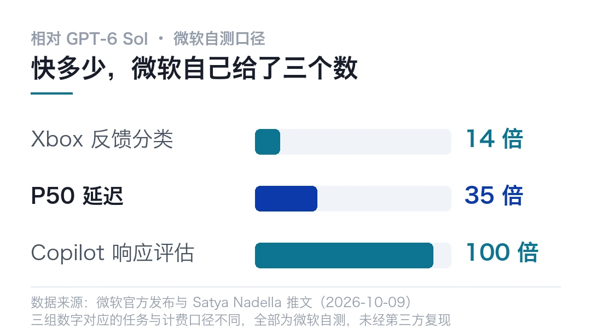
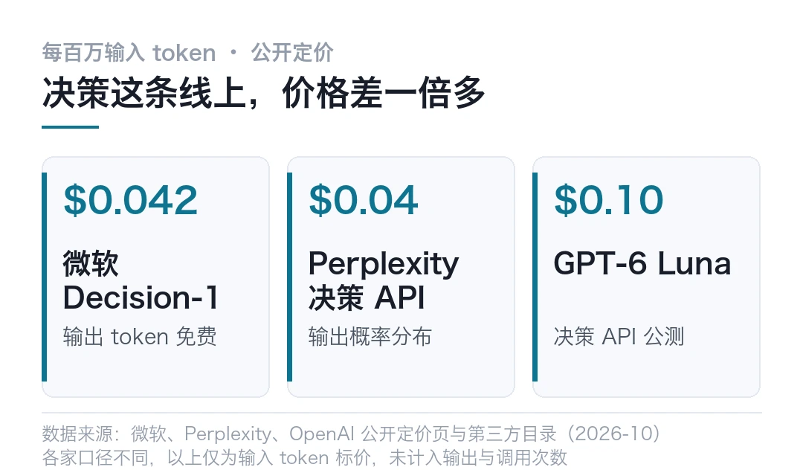
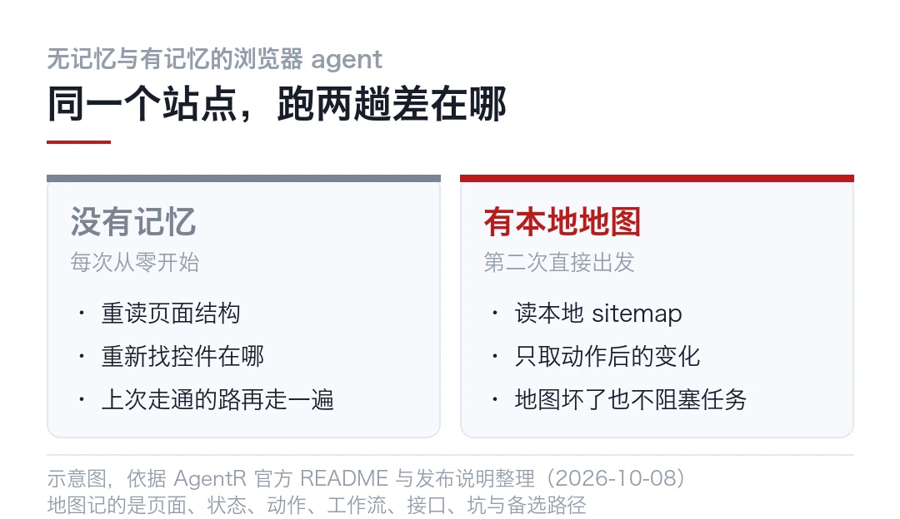
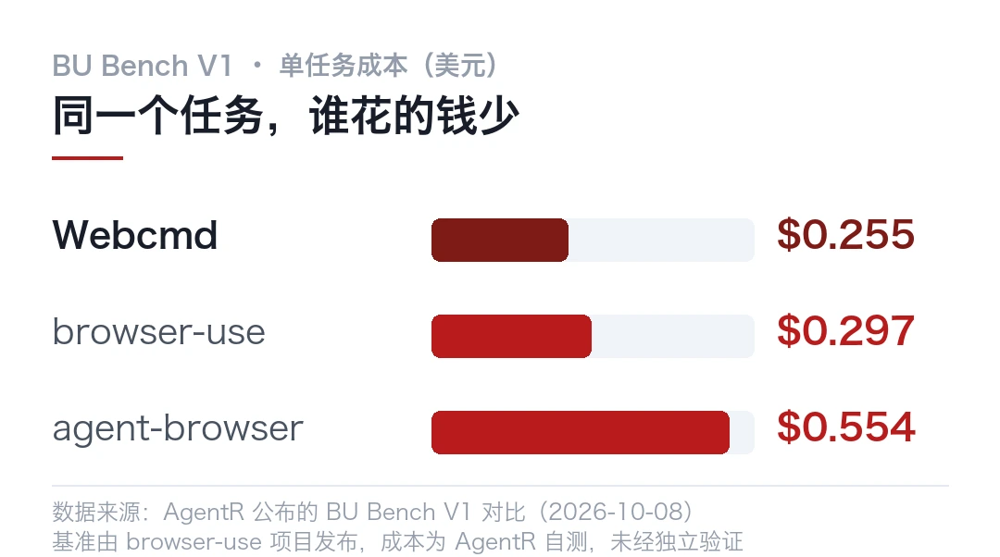
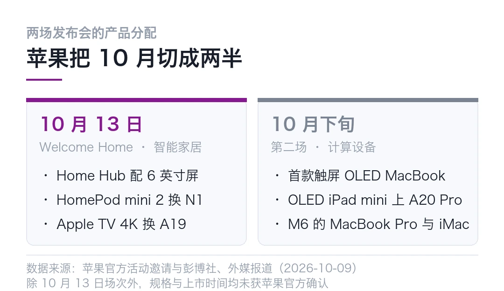
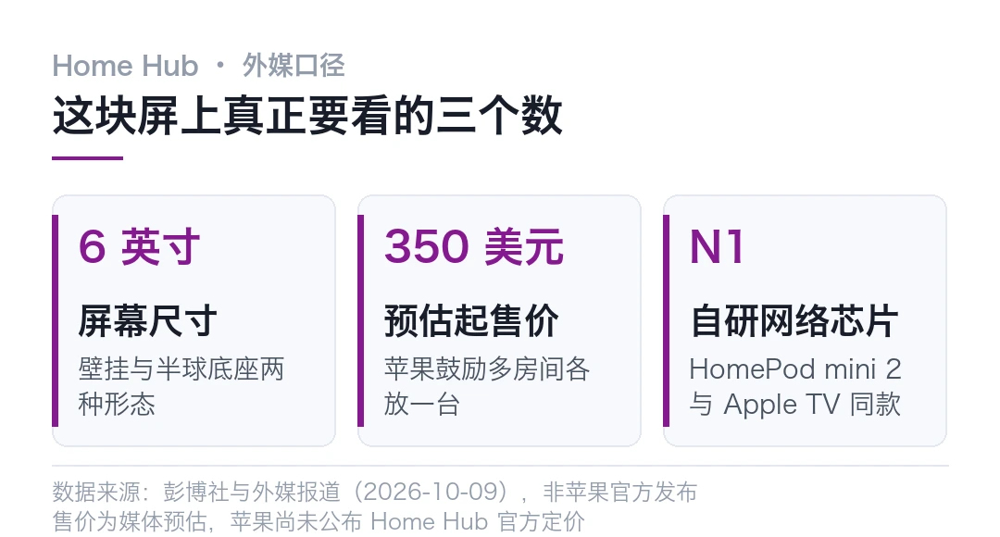
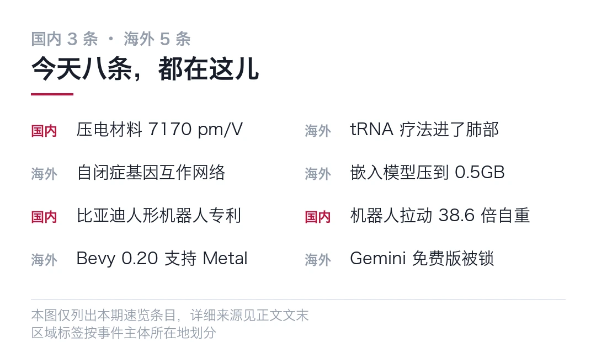
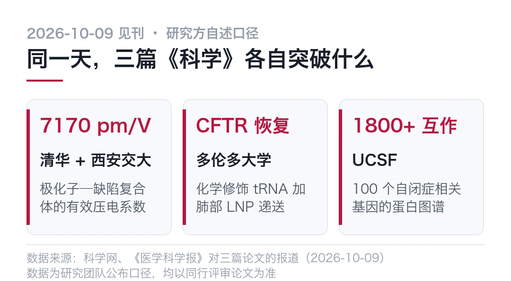

01微软把决策从大模型里拆出来，快了 35 倍
- 微软 10 月 9 日发布 Microsoft-Decision-1，不写文字，只从固定选项里挑答案
- 官方口径说 P50 延迟比 GPT-6 Sol 快 35 倍，36 项基准准确率第一
- 数字全部来自微软自己的测试，第三方复现还没出来
微软这次没往参数上堆。
10 月 9 日，Satya Nadella 在 X 上发了一条简短的消息。微软的新模型 Microsoft-Decision-1 上线，同步进入 Microsoft Foundry。
消息里没有参数规模，没有上下文长度，也没有跑分截图。
按常理，大厂发新模型，比的应该是谁更聪明。微软这次比的是谁更快。
一个不写字的新模型
Decision-1 的定位跟聊天模型不一样。
它不生成段落。输入进来，它吐出一个定型的答案。形态就三种，某件事成立的概率、固定列表里的一个选项，或者一个分数。
这类模型的活是路由、分类、判优先级、做校验。它被推出来，卖点从来不是聊得好不好，而是单次调用的速度和成本。
我打个问号的地方也在这。一个只负责挑选项的模型，能力天花板好算，但它离「智能」这个词有点远。
顺着这个定位往下看，边界很清楚。它不会给你写成段的解释，不会替你规划一整个任务，也不适合做开放式创作。你让它写一篇稿子，方向就是错的。
它擅长的是在一堆定好的选项里挑一个。比如这条客服工单归哪个队列，这段生成的内容够不够格放行，这个工具调用该不该重试。
这里有个容易搞混的地方。它跟以前的分类器不是一回事。
以前的分类器要标几千条数据、训一个小模型、再上线，一轮下来几周。现在把规则用自然语言讲清楚，让它从大模型里蒸出来就行。
这些问题单独看都不难。难的是量。一个 agent 跑一趟下来，这类判断可能要做几十次。
35 倍的口径得拆开
先看微软给的两个场景。
Xbox Research 团队拿它给一万多条游戏反馈做分类。结论是质量与 GPT-6 Sol 相当，速度快 14 倍以上，成本低大约 200 倍。
Copilot 团队用它评估 AI 生成的回答，说结果跟 GPT-5.6 Luna 接近，速度大约快 100 倍。
P50 延迟比 GPT-6 Sol 快 35 倍，比 Quyet-1.0-Large 快 4.5 倍

P50 这个口径得说明白。它取的是中位数，意思是有一半请求比这个数更快。用它比平均值稳妥，但换一批任务、换一种输入长度，数字就会动。
你算一下这几个数。14 倍、100 倍、200 倍，出现在同一个模型的同一场宣传里，跨度大得有点不真实。
为什么会有这么大的差？原因不难猜。
这些对比的分母不一样，任务不一样，计费口径也不一样。决策模型的输出本来就短，输出 token 还免费，成本差距自然被放大。
==36 项基准、近 15 万道题准确率第一这个结论，是微软自己测出来的。== 第三方复现还没有。
说真的，我现在的处理方式，是把 35 倍当成一个待验证的宣称。未必能直接换成你账单上的数字。
决策模型这个概念本身也不新。分类器、排序模型、规则引擎，这些东西在推荐和风控里跑了十几年。
真正变的地方是，它们现在能从大模型里蒸出来，用自然语言描述任务就行，不用再养一个算法团队去标数据。
为什么能从大模型里拆出来
这个问题值得多想两句。
一个 agent 干活，中间要塞很多次判断。这封邮件归哪个类，这张工单要不要升级，下一步调哪个工具。
每次判断都交给大模型来想，延迟会一层层叠上去。
微软自己的例子挺直观。连续 20 个决策，每个加 100 毫秒，整条流程就多出 2 秒。
那用户等得动吗？等不动。
把这类判断从通用模型里剥出来，交给一个又快又便宜的小模型，逻辑上说得通。它的输出空间有限，所以可以做得又小又准。
这条缝里已经挤了五家
有意思的地方在于，这不是微软一家的判断。
OpenAI 10 月 6 日开了 Decisions API 的公开测试，跑 GPT-6 Luna，每百万输入 token 收 0.10 美元。
TypeSafe 的 Jev 在 9 月 17 日上了 Vercel AI Gateway，Liquid AI 的 d1 在 9 月 30 日跟进。
Perplexity 的 pplx-decider 系列更直接，输出的是概率分布，公开价每百万输入 0.04 美元。
再加上微软这次，加上 Unsloth 那批把它做成本地训练教程的人，==决策模型已经是一条有名字的赛道了。==
这几家的切入点有差别。OpenAI 和微软走平台路线，把决策能力挂进自己的云和 Foundry。
Jev 和 d1 更偏中间件，做的是模型路由那一层。Perplexity 干脆把决策做成 API，卖的就是概率分布这个输出形态。
各家抢的位置很像。都盯住了同一个事实，agent 跑起来之后，最贵的不再是生成，而是路上的每一次判断。
越大越好的路线开始分岔
35 倍是噱头，0.042 美元才是真话。

Decision-1 每百万输入 token 收 0.042 美元，输出免费。GPT-6 Luna 那边是 0.10 美元，差了一倍多。
可演示里的那个数是 200 倍。
定价这么定，说明微软希望它被调得足够频繁。一个高频调用的模型，最怕的就是每一次调用都要算钱。
过去两年，这个行业的默认动作是往上堆。堆参数，堆上下文，堆推理步数。Decision-1 是朝反方向走的。
它承认了一件事，==不是所有问题都值得动用最大的那个模型。== 有些问题只需要一个又快又便宜、判断还准的家伙。
也得说清楚它不适合什么。需要解释、需要多轮追问、需要在模糊条件下反复权衡的任务，还是得交给大模型。决策模型的强项是快，不是想得深。
最后说一句判断。这条路线要成立，前提是把任务拆得足够清楚。拆不清楚，小模型就答不出那个定型的结果。
---
工具在往细处走。人得跟着往细处拆。
---
本文信息来源
- ArtificialWatch — Microsoft announces Microsoft-Decision-1, a fast decision model it is testing internally（2026-10-09） · artificialwatch.com
- Seeking Alpha — Microsoft's Nadella unveils tech giant's new fast decision-making AI model（2026-10-09） · seekingalpha.com
- 搜狐科技 — 速度是 GPT-6 Sol 的 35 倍！微软推出高速决策 AI 模型，36 项测试准确率第一（2026-10-10） · sohu.com
- TipRanks — Microsoft Launches New AI Model That Makes Decisions 35 Times Faster Than GPT-6 Sol（2026-10-09） · tipranks.com
- HeadsUpAI — Biggest AI News This Month (October 2026)（2026-10-09） · headsupai.io
02Agent 逛网站不该每次从零开始，Webcmd 想给它一本地图
- Webcmd 是 AgentR 10 月 8 日开源的项目，Apache 2.0，TypeScript 写的
- 它把 agent 在一个网站上学到的东西记成本地地图，下次直接从地图出发
- 官方称能砍掉最多 90% 的浏览器 token 开销，但这个数还没被独立验证
一个没有记忆的 agent，每上一次网站，都得从零开始。
它重新读页面，重新找那个按钮在哪，重新试一遍上次已经走通的路。每一步都在花 token，而每一步都是重复劳动。
AgentR 给的解法很直白，让它记下来。
10 月 8 日，这家公司开源了 Webcmd，Apache 2.0，TypeScript 写的。它做的事一句话能讲完，把 agent 在一个网站上观察到的东西记成本地的一份地图，下次谁来，直接从地图出发。
记下来的东西比我预想的多。页面结构只是其中一项，还有状态、动作、工作流、接口、坑，以及走不通时的备选路径。
==它记的是「怎么在这个站上把事办成」，不是「这个站长什么样」。==
这份地图存在本地，不上云。对做企业内部流程的人来说，这一点比省 token 更要紧。
它还改了 agent 跟浏览器说话的方式。以前是一条命令一步，走一步看一眼。现在 agent 可以发一整段 Playwright 风格的 JavaScript 程序，把相关的几步串起来一次交出去。
注意一点，这种写法省的不只是 token。来回轮数少了，出错的地方也跟着少。
另外两个细节挺讲究。快照会被裁剪成 agent 真正需要的部分，动作执行完只返回变化了的那块。还有一条兜底规则，live browser 永远是唯一的事实来源，记忆读失败不会把任务卡死。

跑分也给了一份。AgentR 拿 BU Bench V1 做对比，这个基准是 browser-use 项目发布的，100 个浏览器自动化任务。
Webcmd 通过了 67 个，是 AgentR 公布的对比里最高的。单任务成本估到 0.255 美元，五个工具里最低，browser-use 是 0.297 美元，agent-browser 是 0.554 美元。
平均每个完成任务花 9.8 轮交互，比 browser-use 的 14.8 轮少 34%。

==这里有个必须说清楚的口径问题，整份对比是 AgentR 自己发布的。== 完整跑分和复现步骤放在 GitHub 上了，独立第三方验证还没有。
仓库现在的数据是 2600 多星、1600 个 fork、9 位贡献者。8 月 22 日它上过一次 Trendshift 的 JavaScript 榜第一。
安装一行就够，Node.js 得 20.6 以上。
```bash
# 安装npm install -g @agentrhq/webcmd
# 下面两行是示意写法，不是真实 API
# webcmd learn https://example.com/orders --profile shop
# webcmd run --profile shop "查一下上个月没发货的订单"```
有人愿意为它花注意力，背景得提一句。
Gartner 在 2025 年 6 月给过一个预测，说到 2027 年底，超过 40% 的 agentic AI 项目会被取消。理由排前三位的是成本失控、业务价值不清、风险控制不够。
成本排第一。所以「省 token」这件事，现在能直接换算成预算。
AgentR 自己说目标是砍掉最多 90% 的浏览器 token 开销。这个数我不打算照抄。它对应的是重复访问同一批站点的场景，站换得越勤，收益越小。
那它到底适不适合你？说真的，分两种人。
跑固定后台流程的，收益大。让 agent 到处乱逛的，先别急着装，地图还没热就已经失效了。
我不打算只看它的跑分复现。我想找一个自己每周都要跑一遍的网站流程，比如某个后台里导出对账单，先让 agent 空手跑一次记下轮数和 token，再用 Webcmd 的 profile 跑第二次，看差多少。
验收标准定三条。第二次的交互轮数得明确下降。同一批数据下结果一致，不能因为读了地图就漏字段。地图文件本身要能读懂，出了错我能手工改。
这三条里，第三条听着不起眼，其实最容易被忽略。地图是给 agent 用的，可它同时也是一份要被维护的资产，格式看不懂就没法修。
跑完出结果我再写一篇。
---
本文信息来源
- Business Insider Markets — AgentR launches Webcmd, open-source browser infrastructure that lets AI agents learn a website once（2026-10-09） · markets.businessinsider.com
- Trendshift — agentrhq/webcmd 趋势档案（首次上榜 2026-08-22） · trendshift.io
- npm — @agentrhq/webcmd 包说明与四层架构 · npmjs.com
- FollowAgents — Webcmd, self-learning browser infrastructure（2026-10-09） · followagents.com
- Open Source Projects — Webcmd Gives Your Agents a Sitemap Memory So They Stop Rediscovering Sites（2026-10-09） · opensourceprojects.dev
- AGI Hunt — WebCMD 开源为浏览器 Agent 加站点记忆（2026-09-23） · agihunt.info
- Gartner — Gartner Predicts Over 40% of Agentic AI Projects Will Be Canceled by End of 2027（2025-06-25） · gartner.com
- GitHub — agentrhq/webcmd 仓库（跑分复现步骤与 README） · github.com
03苹果把 10 月切成两半，先卖家居，再卖 Mac
苹果今年 10 月要开两场。
第一场在 10 月 13 日晚 9 点，主题叫 Welcome Home。第二场排在 10 月下旬，彭博社的说法是 10 月 27 日前后。
先把顺序说清楚，免得看混。家居在前，Mac 和 iPad 在后。

第一场的主角是一块 6 英寸屏
Home Hub 是这次唯一的新品类。
按目前流出的信息，它配一块 6 英寸屏，有壁挂和半球扬声器底座两种形态，跑的是 homeOS，AI 版 Siri 是核心。起售价被估在 350 美元上下。

同时更新的还有两台老设备。HomePod mini 2 换处理器、加配色，塞进自研的 N1 网络芯片，支持 Wi-Fi 7、蓝牙 6 和 Thread。
Apple TV 4K 升级到 A19 系列芯片，内存扩容，同样带 N1。生态配件那边，苹果这次拉上 LG 一起做 HomeKit 的门铃和室内摄像头。
说真的，这两台设备的更新没什么意外。每年都是这个路数，换芯片、加配色、补一个协议。真正值得看的是它们身上那块 N1。
N1 是苹果自研的网络芯片，这次同时出现在 HomePod mini 2 和 Apple TV 4K 上。设备之间的连接一旦握在自己手里，延迟和功耗就不用再看别人的排期。
那块屏真正在抢的位置
一个摆在厨房台面或走廊墙上的带屏设备，形态本身不新鲜。
亚马逊的 Echo Show 做了快十年，谷歌的 Nest Hub 也是老产品线。苹果迟迟没进来，卡的地方不在硬件，在 Siri。
这次敢上，前提是 AI 版 Siri 终于撑得起对话。人脸识别认出这是谁，推对应成员的日历和小组件，视频通话，跟着菜谱做菜。这些功能单看都很朴素。
==有意思的是定价逻辑。350 美元不便宜，苹果还鼓励你在家里多个房间各放一台。==
问题是它凭什么让人买第二台？
音箱的思路是买一个放客厅。中枢要铺开，才有存在感。回到壁挂和底座两种形态上，答案就露出来了，苹果想让它出现在厨房、走廊、卧室这些原本放不下电脑的地方。
第二场才是硬货
10 月下旬那场，产品线动得更狠。
彭博社的说法里，首款触屏 OLED MacBook 会亮相，可能用灵动岛取代刘海，机身更薄。OLED iPad mini 也在名单上，配 A20 Pro 芯片，前置摄像头改成横向，扬声器重新设计。
再往后是 M6 的入门款 14 英寸 MacBook Pro，以及 M6 的 iMac。
另外，配 M5 Ultra、最高 512GB 统一内存的 Mac Studio 高端配置，已经确定 10 月下旬上市，时间窗跟第二场发布会重叠。
注意一点，这批产品里只有触屏 MacBook 算形态上的变化，其余都是屏幕和芯片的例行升级。
冷判断
苹果这两场的顺序，透露的东西比产品本身多。
家居放到第一场，说明苹果把它当新入口来做，Mac 反而排在后面。Mac 和 iPad 挪到 10 月下旬，意思是这一轮偏常规迭代，重在换屏和换芯片，不在形态上冒险。
一块 350 美元、需要多房间铺开的屏，如果把一部分 AI 能力也放进订阅里，那它卖的就不是硬件，是一张进门的门票。
听着像老套路，可这笔账未必小。平板加音箱加中枢三件事，如果被塞进一个 350 美元的设备里，那它抢的就不只是音箱的位置。
那这张门票，比 Mac 值钱还是不值钱？别急着下结论。
---
本文信息来源
- MacRumors — Apple to Unveil Seven New Products Across October 13 and October 27（2026-10-09） · macrumors.com
- MacDailyNews — It's official: Apple to hold 'Welcome home' product event on October 13th（2026-10-08） · macdailynews.com
- 环球网 — Siri AI 落地家居，苹果多款智能家居新品即将发布（2026-10-09） · toutiao.com
- 环球网 — 苹果 10 月预计分两波发布新品：智能家居中枢与 Mac、iPad 系列均在列（2026-10-07） · toutiao.com
- Gizbot — Apple October 2026 Events: Smart Home Hub, Touchscreen MacBook Pro and M6 Macs Expected（2026-10-09） · gizbot.com
- PhoneBunch — Apple Home Hub Event Set for October 13; Expected Touch-screen OLED MacBook Pro, OLED iPad mini, and Smart Home Hub（2026-10-09） · phonebunch.com
- cnBeta — 苹果与 LG 合作开发智能家居设备，涵盖门锁、门铃、温控器和摄像头（2026-10-07） · 163.com
- Mashable ME — Apple partners with LG to develop smart home gear: Doorbells, locks, and cameras（2026-10-06） · me.mashable.com
04三篇 Science 同日见刊，免费 Gemini 被锁到最弱模型
先说最要紧的。今天有三篇《科学》同日见刊，压电材料、tRNA 疗法、自闭症蛋白网络各占一块。
AI 那边两件事值得单看，免费版 Gemini 被锁到只剩最弱模型，还有一个能塞进手机的嵌入模型。

海外 · 免费 Gemini 只剩最弱那一档
Google 从 10 月 9 日起把免费账号限制在 Flash-Lite 一款模型上，Flash 和 Pro 直接从菜单里消失。
听着挺唬人，其实更像分层。月费 5 美元的 AI Plus 也丢了 Pro，反倒是 20 美元的 AI Pro 拿到了 Deep Think，这项能力以前只在 100 美元以上的 Ultra 档才有。
国内 · 压电材料堆到了 7170 pm/V
清华李敬锋团队联合西安交大，在铌酸银基无铅铁电薄膜里造出了极化子—缺陷复合体。
有效压电系数达到 7170 pm/V，电致应变 6.2%。激励提到 10 kHz，仍能保持在 1000 pm/V 以上。压电材料长期卡在「快而小」和「大而慢」的取舍里，这次把两头凑上了。成果发在《科学》。
海外 · 一类 tRNA 疗法进了肺部
多伦多大学把化学修饰的抑制型 tRNA 和肺靶向脂质纳米颗粒打包，恢复了无义突变造成的 CFTR 蛋白表达与功能。
验证做在支气管上皮细胞、小鼠模型和患者来源类器官三层上。无义突变是囊性纤维化里难啃的一类，切口是真的打开了。成果发在《科学》。
海外 · 100 个自闭症基因的互作网络
UCSF 画了 100 个高置信度自闭症相关基因的蛋白质互作图谱，找出 1800 多种相互作用，再用 AlphaFold 和人类模型验证。
FOXP1 上来自不同患者的变异，都会破坏它与 FOXP4 的结合，脑类器官里的皮层神经活动随之改变。从变异到神经发育，这里给了一条可追的链路。成果发在《科学》。

海外 · 嵌入模型压到了 0.5GB 内存
Google 放出 EmbeddingGemma 2，740M 参数，把文本、代码、图像、视频、音频映进同一个嵌入空间，Apache 2.0 许可。
端侧 0.5GB 内存就能跑。0.5GB 够用吗？做本地语义搜索和端侧 RAG，这个体积基本够了。
国内 · 比亚迪人形机器人专利曝光
国家知识产权局 10 月 9 日公示了一项「具身智能机器人」外观设计专利，专利权人是比亚迪。
图纸上是黑白机身、圆润头部、不设屏幕、多组高自由度关节。结合此前官方口径，这台机器身高 1.61 米、重 58.5 公斤，31 个运动自由度，灵巧手重复定位精度 ±1 毫米。注意一点，比亚迪没说它对应哪个型号。
国内 · 一台 37 公斤的机器人拉动了 1434 公斤的汽车
星源智和智源研究院联合研发的全身控制模型 Thor，在北京亦庄完成了一次吉尼斯挑战。
机器人自重 37.15 公斤，拉动 1434 公斤的汽车，双足行进 9.92 米。回到控制本身，难的是它一边输出力量，一边把外部反作用力算进平衡里。
海外 · Bevy 0.20 把光追搬上了 Metal
Rust 游戏引擎 Bevy 发布 0.20，227 位贡献者、817 个 PR。
实时路径追踪插件 Solari 换了改进版 ReSTIR 实现，噪声更低，并通过 Metal 支持在 macOS 上跑了起来。着色语言从自研的 WGSL 方言换成 WESL。其实吧，Metal 这一条对用 Mac 开发的人最实用。
---
本文信息来源
- 新浪财经 — 新浪 AI 热点小时报（2026-10-10 06 时） · k.sina.com.cn
- AI in Context — Google Locks Free Gemini Users Out of Flash and Pro Models（2026-10-09） · aiincontext.com
- 腾讯新闻 — Gemini 应用调整免费用户可用模型（2026-10-10） · news.qq.com
- 科学网 — 缺陷序构实现快又大机电响应（2026-10-09） · news.sciencenet.cn
- 科学网 — 研究发现化学修饰 tRNA 经 LNP 递送恢复囊性纤维化 CFTR 功能（2026-10-09） · medical.sciencenet.cn
- 科学网 — 自闭症突变重塑蛋白质相互作用网络（2026-10-09） · medical.sciencenet.cn
- HeadsUpAI — Biggest AI News This Month (October 2026)（2026-10-09） · headsupai.io
- 太平洋科技 — 车企「造人」！比亚迪自研人形机器人外观专利曝光（2026-10-09） · news.pconline.com.cn
- 央广网 — 星源智 Thor 创下吉尼斯世界纪录（2026-10-09） · tech.cnr.cn
- SINGULISM — Bevy 0.20 Launches with Solari Upgrades, Metal Support and WESL（2026-10-09） · singulism.com
本文首发于公众号「YITENG」。原文：daily.html
留言